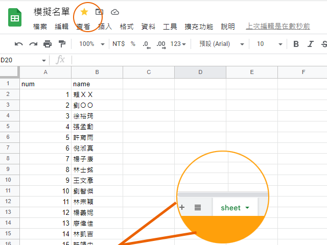
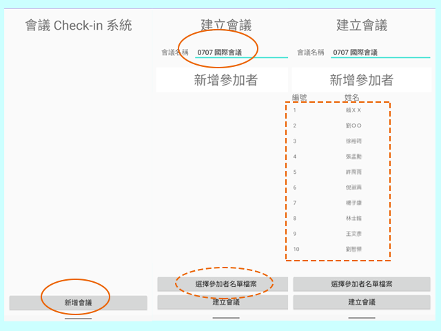
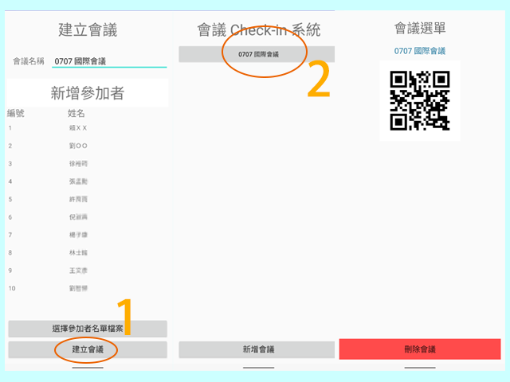
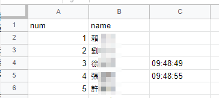
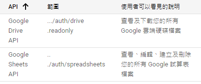

之前有朋友想要在一場大約200人的會議的招待櫃台，確認有誰已經到了
這個 QRChecker 是 Android based 的 SW 解決方案
Private Policy is here
你應該已經確認有誰會到場，可能有一份訪客清單，正準備寄出邀請函或者是 E-Mail
在 Google 表單上面同時也準備一份清單 格式大致如下
注意 A1 B1 的 title 是否有都無所謂
A* 不管有無使用請填上數字
C 欄請保持空白 之後QRChecker 會填上 timestamp
將此份 Google 表單標記星號會比較方便
建立新的會議 此時手機需要有對外連線 (要連到你的雲端硬碟)
填上會議名稱 導入你的訪客名單
導入後請確認 是否人數正確 在這裡 QRChecker 只會導入 A欄 為數字的 人名
如果是Demo 版只會導入前十筆資料
按(1)完成建立會議
按(2)開始會議功能
手機上出現的 QR code 是一個內網的 網站 拿出 第二支手機 做 QR code 辨識
點選 列印清單 會出現一整排 QR code
注意旁邊標示的 C1 就是 表單的位置
以我的 表單為例 1 賴ＸＸ 要對應的是 C2 的 QR code

建議可以用 PC 開啟 將整份 QRcode list 後處理看是要列印還是寄出交給訪客們
其他 工作人員手機 掃描 QRcode 進首頁 點選 掃描功能
等訪客到場時 工作人員掃描訪客出示的 QR code 就會在Google 表單對應的 C欄裡面留下 timestamp

我有使用 Google Drive API 以及 Google Sheets API 細節如下
主要是 scenario 設計 讓所有的資料都放在使用者私人的 google 表單中作業
drive.readonly 為了讓使用者能瀏覽自己的檔案並選擇
dspreadsheets 為了讓QRChecker能讀取之前選擇的檔案 以及在C欄加上 timestamp
每次建立會議QRChecker只會去針對選擇的 Google 表單做讀取以及編輯
且這些動作一定要是 QRChecker 在前景才會有動作
有資安疑慮可以將原本選擇的 Google 表單在使用完成做刪除